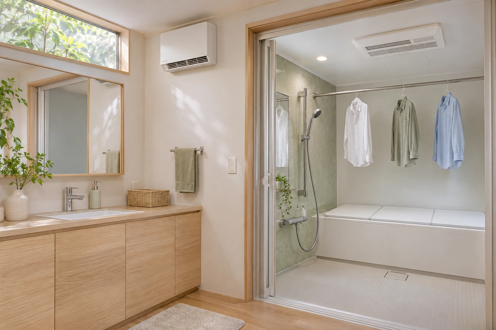

冬のお風呂。「服を脱ぐのがつらい」「出た瞬間に、また寒い」。お湯を熱くして乗り切っていませんか。
リフォームで先に考えたいのは、お湯の温度ではなく、脱衣所と浴室の暖かさです。さらに浴室暖房乾燥機を選べば、雨の日の洗濯物に占領されていたリビングも、くつろぐ場所に戻せます。
この記事では、寒さ対策で優先する場所と、わが家に合う設備の選び方を整理します。
お風呂の寒さを減らして、洗濯もラクにする暖房の選び方
公開日：
 文｜エイスケ（住宅と教育の専門家）
文｜エイスケ（住宅と教育の専門家）

冬のお風呂。「服を脱ぐのがつらい」「出た瞬間に、また寒い」。お湯を熱くして乗り切っていませんか。
リフォームで先に考えたいのは、お湯の温度ではなく、脱衣所と浴室の暖かさです。さらに浴室暖房乾燥機を選べば、雨の日の洗濯物に占領されていたリビングも、くつろぐ場所に戻せます。
この記事では、寒さ対策で優先する場所と、わが家に合う設備の選び方を整理します。
暖かい居間から寒い脱衣所へ。そして熱い湯船へ。急な温度変化で血圧が大きく変動する、いわゆるヒートショックが心配になる流れです。
寒暖差に加えて、熱いお湯や長湯、急な立ち上がりにも注意が必要です。消費者庁の調査では、55歳以上の3,900人のうち338人が、入浴中にのぼせたり意識を失ったりしてヒヤリとした経験があると答えています。
数字で見る、入浴中のヒヤリ経験
55歳以上を対象とした2015年12月のインターネット調査
タイミングが分かった回答では、浴槽から立ち上がった時が最多でした。お湯から出るときは、ゆっくり立ち上がりましょう。寒さへの備えは、服を脱ぐ前に、脱衣所と浴室を暖めておくことから。お湯の温度とつかる時間も、あわせて見直します。
浴室に暖房があっても、脱衣所が冷えていれば、裸になるときも着替えるときも寒いまま。おすすめは、脱衣所と浴室、両方を入浴前に暖めることです。

服を脱ぐとき・着替えるときの寒さに。壁付けなら床を広く使えます。
体を洗う場所の寒さに。乾燥機能付きなら洗濯物の干し場所にも。
居間と脱衣所の温度差は、5℃以内を目安に。浴室も入浴前に暖めましょう。「少し寒い」と感じていた場所が、実際にはどれくらい冷えているか分かります。服を脱いでからスイッチを入れるのではなく、食後の片付けなどのタイミングで先に暖めておくと、入浴がぐっと快適になります。
脱衣所で使える電気ファンヒーターなら、今ある寒さへの対策を始めやすくなります。水がかかりにくく、タオルや衣類から距離を取れる場所に置きましょう。一般の室内用ヒーターを浴室へ持ち込むのは避け、使用できる場所と離隔距離を説明書で確かめます。
足元をすっきりさせたい、毎回の出し入れをなくしたいなら壁付け暖房を。窓から冷気が入る家では、内窓や断熱も一緒に相談すると、暖房の熱を逃がしにくくなります。
カーテンレールのシャツ。ソファの前の物干しスタンド。「乾くまで、ここは通れない」。浴室に衣類乾燥の機能があると、こんな日常を変えられます。
雨、花粉、夜の洗濯。外に干せず、リビングが洗濯物でいっぱいに。
洗濯物は浴室へ。家族のくつろぐ場所と、干す場所を分けられます。
浴室をリフォームするなら、暖房と一緒に衣類乾燥機能と物干しバーも検討しておくのがおすすめです。使ってから「これも付ければよかった」とならないよう、いつもの洗濯量を伝えましょう。
乾燥時間は、機種や衣類の量、脱水の状態で変わります。カタログでは「何kgの洗濯物を乾かした時間か」を確認すると、わが家で使うイメージがつかめます。
入浴後に浴室を乾かせるのも便利なところ。換気・乾燥と掃除を組み合わせれば、湿気をためにくい浴室づくりにつながります。
浴室を丸ごと替えないと暖房を付けられない、というわけではありません。まずは今の設備を生かせるか確認しましょう。
換気扇を暖房乾燥機に替えられるか相談。天井の開口寸法、換気ダクト、電源・専用回路を確認します。
暖房乾燥機・脱衣所暖房・窓・断熱を最初からセットで検討。設備を選んだ後ではなく、計画の段階で希望を伝えます。
使用場所に適した置き型暖房か、壁付け暖房を検討。床の広さ、コンセント、衣類との距離から選びます。
機器だけの値段で比べると、電気工事や換気工事が後から加わることがあります。見積もりを見るときは、次の項目が含まれているか確認しましょう。
| 内訳 | 確認したいこと |
|---|---|
| 機器・部材 | 本体、物干しバー、取り付け枠は含む？ |
| 取り付け・撤去 | 今の換気扇の撤去・処分、天井の補修は含む？ |
| 電気・換気工事 | 専用回路、電圧変更、ダクト工事は必要？ |
| その他 | 諸経費・消費税を含む総額と、お風呂を使えない時間は？ |
本体価格に加え、取り付けや電気・換気工事を含む総額を確かめましょう。同じ機能・工事範囲で見積もりをそろえると比べやすくなります。
入浴前だけの暖房と、数時間使う衣類乾燥では、運転時間が違います。費用の計算方法を知っておくと、毎日使うか、雨の日だけ使うかを決めやすくなります。
消費電力（kW）× 時間 × 電気単価
計算例：消費電力1.2kWが30分続き、電気単価31円/kWhなら18.6円。製品の実測値や衣類乾燥1回分の費用ではありません。実際は機種・制御・契約単価で変わります。
相談には、浴室全体・換気扇・脱衣所・分電盤の写真と、浴室の型番を用意するとスムーズです。マンションなら換気設備や管理規約の確認も依頼しましょう。
暖房を整えることと、入り方を変えること。両方を、今日から少しずつ始めましょう。
飲酒後や食後すぐの入浴は避けましょう。睡眠薬などを使っている方は、服用後の入浴について医師・薬剤師に確認を。立ちくらみや失神の経験がある方も、設備だけで済ませず医療機関へ相談してください。
「服を脱ぐとき、お風呂の中、出たあと。どこが一番寒い？」 家族の答えを聞いてから相談すると、必要な暖房を見落としにくくなります。
構成・見せ方の参考：Living Compass、エディオン。
関連記事
この記事を書いた人｜エイスケ
1986年生まれ。実家の工務店・不動産に10年間従事したのち、教育の世界へ。住宅と教育、両方の視点から「豊かな暮らし」をテーマに執筆します。※本コラムは筆者個人の見解・経験に基づくものです。最終的な判断は各分野の専門家にご相談ください。